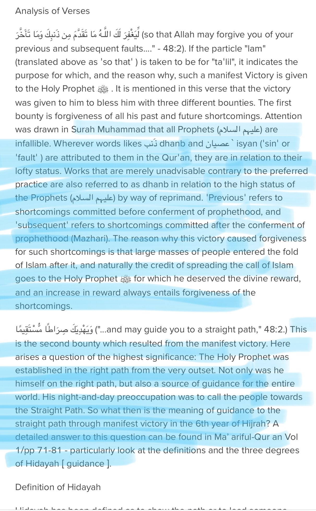
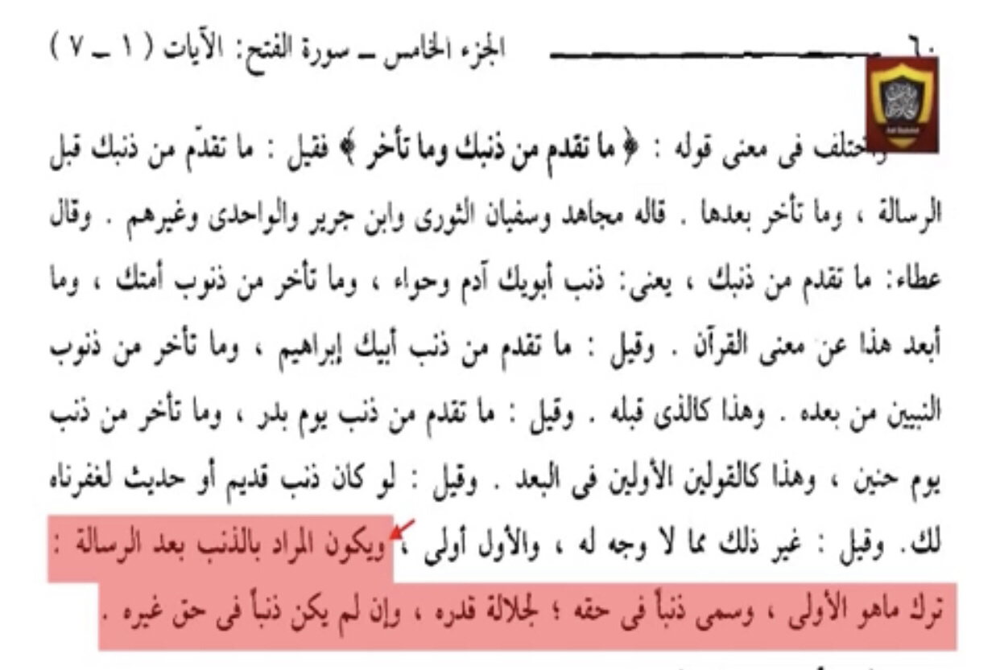
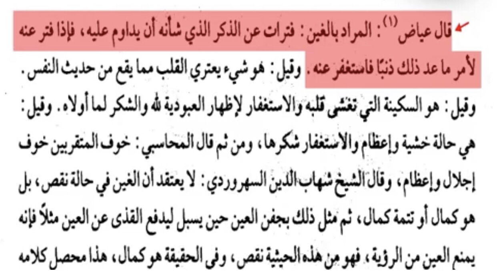
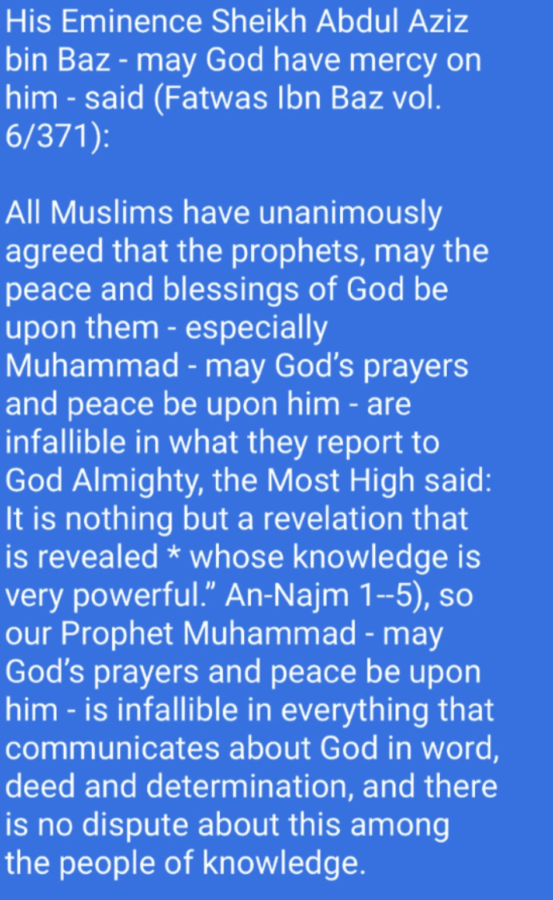

For the Quran first
This is a misunderstanding of verses
Prophets in Islam are allowed to make errors not sins There is a big difference between both An error is something without legislation that they could have better done
A sin is something with legistlation that he has done wrong and broke

Translation: “What is meant for Dhanb after prophethood is leaving what is for priority like when he (pbuh) left the blind man waiting and was doing da’wah to quraish and it isn’t a true Dhanb (sin)”
-Source: Fath al-Kadir Tafsir Al-Shawkany (RH) volume 5 page number 60 explaining Quran 48:2

Now for the sunnah
Translation: “The meaning is The time between dhikr where the prophet didn’t pray in although is small the prophet counted it as Dhanb although it isn’t”
-Source: Fathul bari Sharh Sahih al-Bukhari Ibn hajar al-asqualani (RH) volume 14 page number 286

Lets see what scholars said

Shaykh al-Islam Ibn Taymiyah (may Allaah have mercy on him) said in Majmoo’ al-Fataawa, 4/319:
The view that the Prophets are infallible and protected against committing major sins, as opposed to minor sins, is the view of the majority of Muslim scholars and of all groups. It is also the view of the scholars of tafseer and hadeeth and fuqaha’. Indeed, nothing has been narrated from any of the salaf, imams, Sahaabah, Taabi’een and those who followed them except that which is in accordance with this view.
End quote.